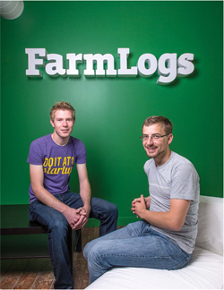

Brad Koch, 2011, B.S., and Jesse Vollmar, 2011, B.S., weren’t typical college students. As incoming freshmen at SVSU, the two were already running a successful IT consulting business. Since their 2011 graduation, both with a Bachelor of Science in computer science, they’ve also “graduated” from their initial business and have started a new company, FarmLogs, which has attracted a lot of investor interest as well as $5 million in venture capital.
"Proximity was a key factor [in choosing SVSU]." Jesse said. The financial assistance each received was also helpful. As co-valedictorians of their graduating class at Union-Sebewaing High School in Michigan’s Thumb, both received the President’s Scholarship at SVSU, which covered their tuition and select fees for four years.
“Brad and I started our company in high school,” Jesse said, “and it was taking off. I knew I wanted to continue operating it while obtaining a degree, so moving [too far] away [from home] wasn’t an option. SVSU was in the right place.” Brad agreed, adding that the scholarship gave them the financial security to channel more effort into their business. “We were able to learn while working,” he said. “And we could apply things we were learning to actual clients.”
Having grown up in farming communities, Brad and Jesse were familiar with the challenges farmers face, including a lack of technological sophistication in agriculture generally. While their IT consulting business was successful, both Jesse and Brad recognized they could do more. “With our consulting business, we were building software for an agricultural client,” Brad said. “We realized there was a huge need in the agricultural sector and nobody was building software for farmers.”
“The light bulb moment came at my family’s farm,” Jesse added. “I was in the office, and another farmer asked me if we were ready with our software. We weren’t even creating software yet, but that was the moment we decided we could make it successful.” “It” would be FarmLogs, a web application for farm management. Jesse said he and Brad “daydreamed” about the project for about six months before they began working on the app. The product and the process were made better after participating in Y Combinator, a program that provides seed money, advice, networking and guidance to business startups, especially those in the technology sector.
“We went full-scale into FarmLogs on Jan. 3, 2012, the first day of Y Combinator,” Jesse said. From there, the product and the business grew nicely, and today the app is being used by farmers.
From their company headquarters in Ann Arbor, Brad and Jesse see a future ripe with possibility. “Ag needs data technology,” Brad said. “Existing players weren’t providing it. We’re here to make sure that changes; we’re bringing people the software they need.” “There are decades of innovation to be built,” added Jesse. “We’ll be working on FarmLogs for a very long time.”